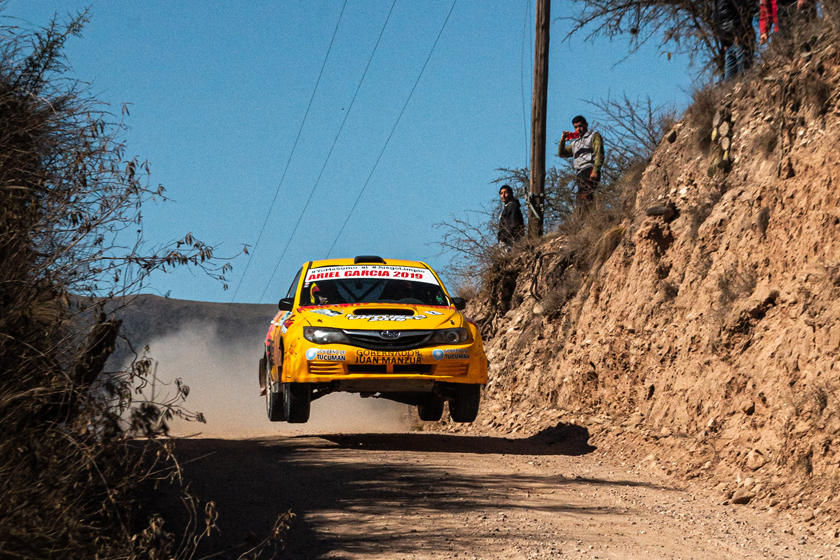

Rally racing is one of the purest and oldest forms of motorsport and is held on public or private roads instead of
on dedicated race tracks. It's distinguishable from other motorsport forms because cars race in a point-to-point
format instead of completing laps of a circuit as in NASCAR or Formula 1.
While some forms of motorsport might feature more powerful cars and higher speeds, rallying is still considered
by many to be the ultimate form of motor racing due to its unpredictability and the heavy toll it takes on both
the car and drivers. In this post, we'll take a look at what a rally is, rally race types, the history behind the sport,
some famous drivers and their vehicles, as well as what the sport looks like in the US.
Rally events have been taking place for nearly 130 years and can be considered one of the first forms of motorsport,
but the term "rally" only started gaining traction in the sport after the first Monte Carlo Rally in 1911.
The late 19th century and early 20th century saw the sport grow in Europe, and after the second world war, rallying entered
the golden age of long-distance road racing, with events such as the Monte Carlo and French and Austrian Alp rallies making
headlines. In 1953 the FIA started the European Rally Championship. This was the premier championship until 1973, when the
FIA founded the World Rally Championship for Manufacturers.
1950 saw the birth of the special stage, which eventually spread from Sweden and Finland to the rest of the rallying world,
becoming the most popular and safest way to rally. The modern form of rally racing has been around since the late 50s and has
seen event organizers move away from long-distance racers such as the intercontinental London-Sydney Marathon and the London To
Mexico World Cup Rally held in 1970. To this day, many believe that Group B rallying of the 1980s was the pinnacle of the sport.
Group B rally cars produced well over 600 horsepower and included legendary vehicles such as the Audi Quattro S1 and
Renault 5 Turbo. The crazy speeds of these cars caused many severe accidents, and the group was canceled at the end of the 1986
season.
An American national championship was started in 2005 and was called the Rally America but was ended in 2018 due to lack of
participation. The American Rally Association was founded in 2016 and is currently the only sanctioning body in the US.
There are two main types of rally races, namely road rallies, and stage rallies.
Stage rallies are the configuration of choice for the World Rally Championship (WRC) and see the rally driver and co-driver complete special stages of closed public roads in the least amount of time possible. These A to B, or point to point stage rallies are linked by sections of a public road, and each stage can vary in length from as little as a couple of miles to over 30 miles. Stage rallies are set up so that each competing team begins at a set interval to prevent significant backlogs. Each rally event will usually have 15 to 30 special stages, and the driver with the lowest overall time is declared the winner. These stages can take place over dirt, snow, or tarmac.
Road rallies are the sport's original form and are still held on roads open to regular traffic. The emphasis with road rallies is not on the fastest time but on accurate timekeeping and average speeds. Modern versions of this type of rally are usually called Time-Speed-Distance rallies. The Monte-Carlo-style rally is also a popular form of road rallying and tests the driver's navigation and timing skills.
Rally sports racing continues to be massively popular around the globe, and pro rally events and pro rally teams are active in the US but are less active than their European counterparts. Rally sports cars are specially designed to handle unpredictable terrain found on rally stages across the world, which can include ice, asphalt, and dirt. The World Rally Championship is the sport's biggest competition and sees drivers compete in street-legal rally cars across the globe. Rallying is a great grassroots form of motorsports, and anyone with the correct safety gear can quickly get into a local rally championship.